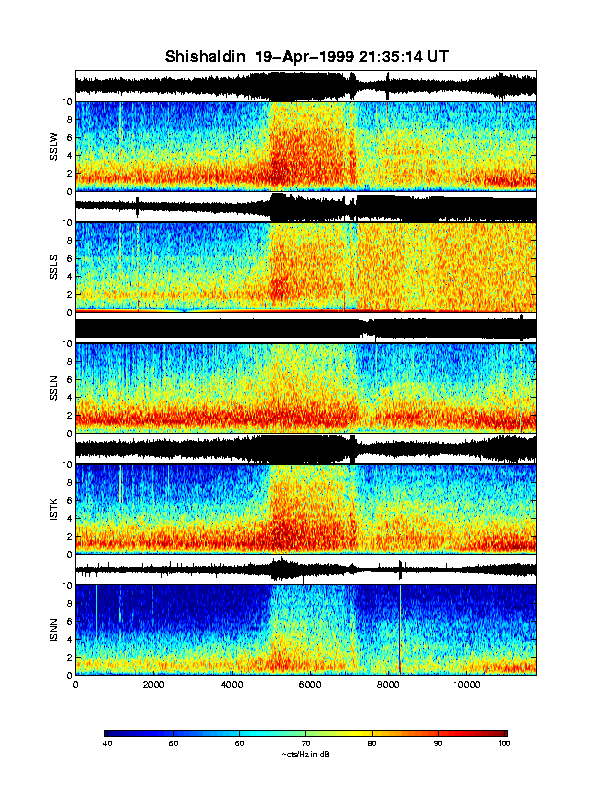

Spectrograms for Shishaldin showing data from 1815 UT to 2135 UT. A rapid increase in signal level occurs at 1938 UT or 1939 UT, which probably corresponds to the onset of the main eruption. As can be seen from the spectrograms, this signal is very broadband, and saturates (red) at all frequencies.
.
Glenn Thompson, 3 May 1999.